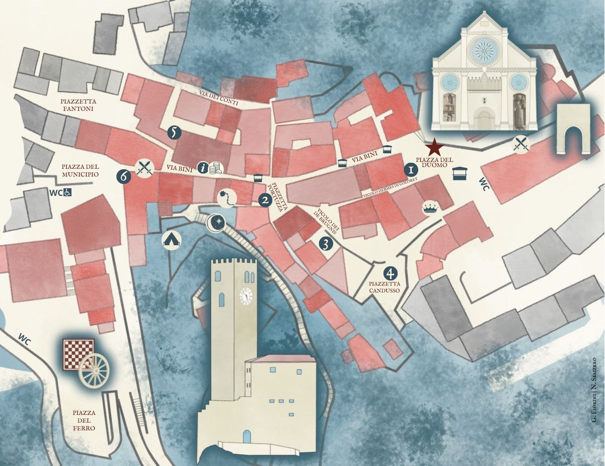

I Luoghi della Festa
1️⃣ Antro et Locanda de lo Duomo
2️⃣ Cort dal Diaul
3️⃣ Cervogeria de lo Eretico
4️⃣ Taberna de lo Rospo
5️⃣ Porta Paninorum
6️⃣ Taberna Pane et Salamen
Eventi
⭐ Incendio del Campanile
🏁 Palio del Niederlech

×